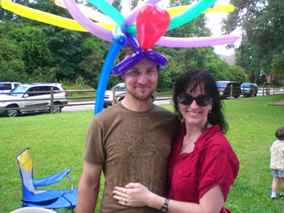

www.bringthemhomenow.com
Take me back to christineandethanrose.com

NAMASTE!! :-)
Hi, I'm Christine and this is my wonderful husband Ethan. We'll be married for 8 years this October! My oldest girl, Bronte, will be 13 this year! ... AND ETHAN WILL BE 40!!!
We've been in Austin since 2006, and we've settled in nicely. Ethan & I have written a book that's published by Dalton Publishing and released August 2, 2008. It's called Rowan of the Wood, and so far it's had great feedback. We attend several fantasy conventions dressed as our characters, so check out the website for the most recent scheduling information. For the most recent press, see the newsroom link at our author website.
I've taken a hiatus from politics and making movies to work writing speculative fiction, but you can still check out my previous work at Blue Moose Films and me on IMDB.
We're sold our AWESOME land in Southern Oregon, but the pictures are still up from our homesteading attempt.
Look at what's going on in our lives! The pages below are from 2006 and before -
this page will be kept up for all these links and pictures and history,
but please visit our new website: christineandethanrose.com for the most recent information.
Disney World - Christine's 37th Birthday Trip!
Samhain Celebration
Cannes 2006
Paris May 2006
Christmas 2005
Thanksgiving
Christine's 36!!
Cedar Point Project!
October 2005
Burning Man 2005!
March - August 2005
Trip to Cannes - May 2005
Burning Flipside! - May 2005
Trip to Sweden & London - Feb 2005
New Years 2005, Austin Trip & more!
Christmas 2004
Our Cruise to Mexico
Christine's 35th Birthday
Halloween 2004
Trip to Hawaii - October 2004
Across the USA - August thru October 2004
Family Pictures - Sept/Oct 2004
Burning Man 2004 - Aug/Sept 2004
Trip to Paris, Take Two - June 2004
Trip to Nova Scotia - May 2004
Trip to Paris - March 2004
Christine's 34th Birthday & Trip
Halloween 2003
3rd Wedding Anniversary Trip
Burning Man 2003
Opens in new window
Ethan is 35! - July 9, 2003
Fun in the Sun & Mamma Mia! - June 2003
Springtime! - April 2003
Berkeley * TX - March 2003
SF Peace March - M15
Trip to Canada - Jan 2003
East Coast Production Trip - Feb 2003
Christmas 2002!
2nd Anniversary Trip to Shasta!
Trip to Reno & Oregon - September 2002!
Burning Man 2002! :-)
Please follow these links to find out more about me and my interests.
And Please be patient! Many of these pages have several images, so it might take awhile to load. :-) Thanks!
Email me

Last Update: February 9, 2008